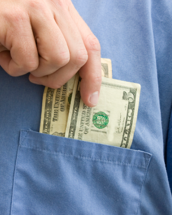

Optometrists have an inherent conflict of interest.
Here are four things you need to know about the contact lens industry:
-
You're legally required to have a contact lens prescription in order to buy contact lenses. Traditionally, this requires going to an optometrist once per year to have an exam (even if your eyes feel fine).
-
Optometrists sell what they prescribe. In fact, 50-60% of their income comes from the sale of contacts and glasses — not providing a medical service. This income directly affects their revenue (positively) and your wallet (negatively).
-
Because of that conflict of interest, optometrists frequently refuse to give out copies of contact lens prescriptions. Why? They don't want their customers patients to take their prescription and shop around for a better price or buying experience.
-
Optometrists have a long history of refusing to release prescriptions to patients. Lawsuits have happened and legislation has been passed requiring them to automatically give patients their prescriptions. And still, many of them refuse. How bad is the problem? Pretty bad:
A 2019 study showed 49% of contact lens wearers didn't automatically receive their prescriptions. Worse, 21% of contact lens wearers never received a copy of their prescription at all.
But this goes back further than just 2019. The 2019 study was consistent with other studies conducted in 2014, 2015, 2016, and 2017 by 1-800 Contacts and Consumer Action.
These practices and flagrant disregard for the law harm consumers, threaten the free market, and are unethical and illegal.